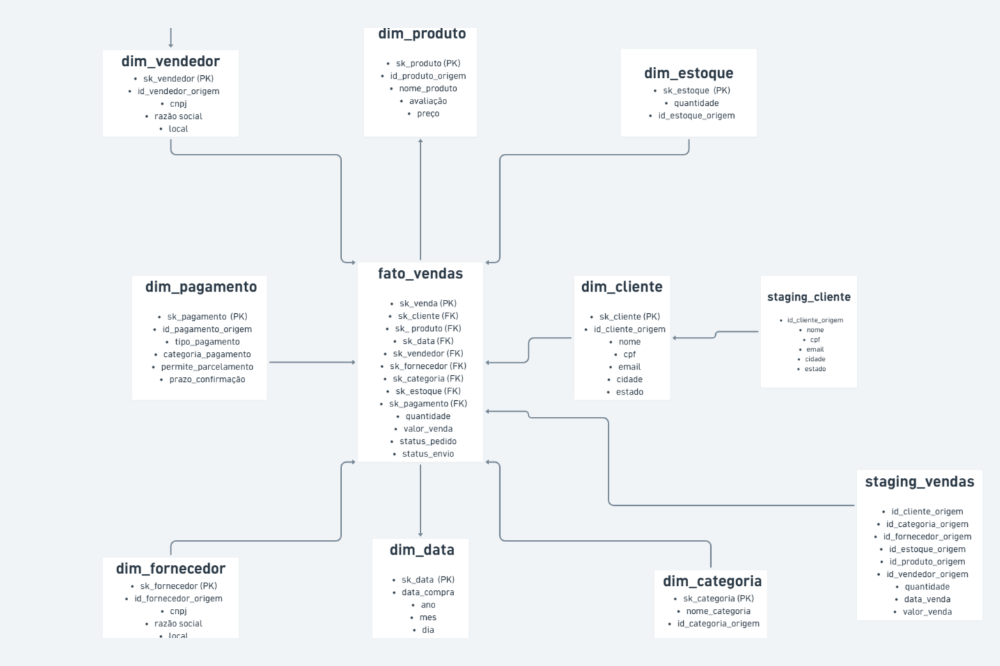
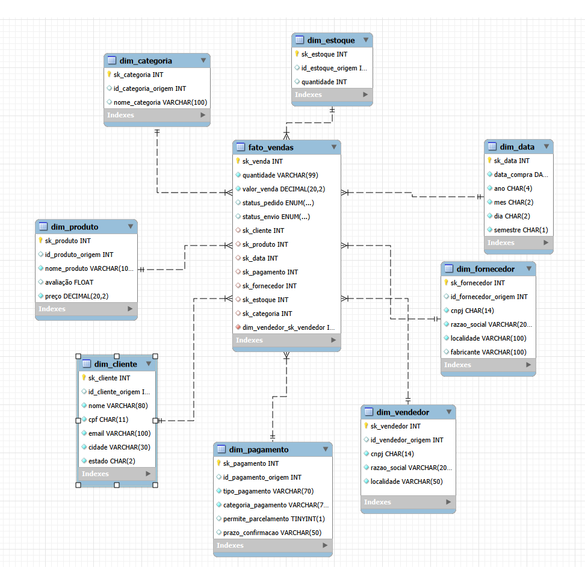
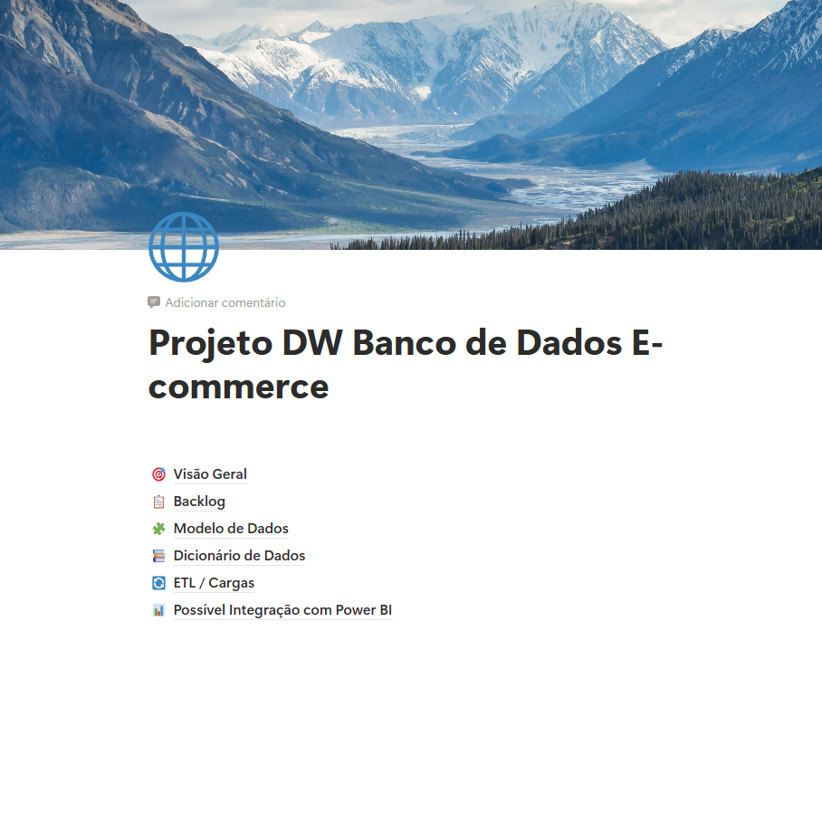

Data warehouse de e-commerce
Dados · 2026
Sozinho, da modelagem ao carregamento
Pessoal

O problema
Dado de venda nasce transacional: para saber faturamento, venda por produto, por cliente, por forma de pagamento ou por período, cada pergunta vira um JOIN escrito na hora.
O que construí
Um data warehouse em esquema estrela: cinco tabelas de staging, oito dimensões e o fato de vendas.
ETL em camadas. Gerador SQL, staging, transformação, dimensões, fato — nessa ordem. Cada etapa é um script versionado, e o dado bruto fica intacto na camada de entrada.
Chave substituta em toda dimensão. A chave do sistema de origem não vira chave do modelo, então mudança de cadastro não reescreve histórico de venda.
Stack
MySQL
SQL
Resultado
Cinco perguntas de negócio numa consulta só

